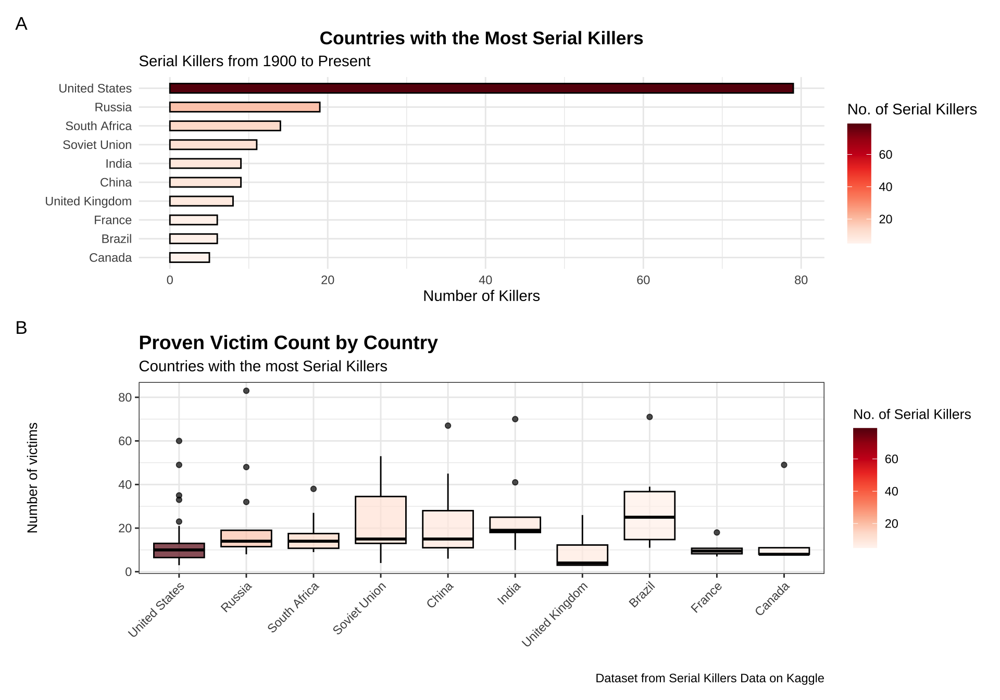

#load libraries
#loaded a bajillion libraries
#| warning: false
#| messgae: false
library(tidyverse)
library(here)
library(ggmap)
library(tidytuesdayR)
library(emojifont)
library(patchwork)
library(ggrepel)
library(gganimate)
library(magick)
library(devout)
library(devoutrgl)
library(triangular)
library(snowcrash)
library(cryogenic)
library(ggrgl)
library(maps)
library(mapdata)
library(mapproj)
library(ggspatial)
library(sf)
library(rnaturalearthdata)
library(rnaturalearth)
library(plot3D)
library(RColorBrewer)GoodPlot/BadPlot
Intro:
This is my GoodPlot/BadPlot assignment. I am using the Serial Killer Dataset off Kaggle to attempt to make a beautiful visualization of the data, as well as a horrifying one.
Libraries:
Data:
#Read in the data
highest_victim<-read.csv(here("GoodPlotBadPlot", "Data","SerialKiller", "Highest_victim_count.csv"))
victim30<-read.csv(here("GoodPlotBadPlot", "Data", "SerialKiller","15_to_30_victim_count.csv"))
victim14<-read.csv(here("GoodPlotBadPlot", "Data","SerialKiller", "5_to_14_victim_count.csv"))
victim5<-read.csv(here("GoodPlotBadPlot", "Data", "SerialKiller", "Lessthan_5_victim_count.csv"))
#take a gander at the data
head(highest_victim) Name Country Years.active
1 Luis Garavito Colombia\nEcuador\nVenezuela 1992 to 1999
2 Pedro López Colombia\nPeru\nEcuador 1969 to 1979
3 Javed Iqbal Pakistan 1998 to 1999
4 Mikhail Popkov Russia 1992 to 2010
5 Daniel Camargo Barbosa Colombia\nEcuador\nBrazil (alleged) 1974 to 1986
6 Pedro Rodrigues Filho Brazil 1967 to 2003
Proven.victims Possible.victims
1 138 172–300+
2 110 300+
3 100 100
4 83 83+
5 72 180
6 71 100+
Notes
1 Child-murderer, torture-killer, and rapist known as "La Bestia" ("The Beast"). Confessed to killing 140 boys between eight and 16 years old over a seven-year period in Colombia and neighboring countries. He is suspected of murdering over 300 victims, mostly street children. Garavito was originally sentenced to 1,853 years in prison, but this was later reduced to 22 years after he led police to many of the bodies of his victims. He is scheduled to become eligible for parole in 2023.
2 Child-murderer and rapist, known as "The Monster of the Andes". Targeted young girls, between the ages of eight and 12. Arrested in 1980 and convicted in 1983 of killing three young girls, but claimed to have killed hundreds. Despite being believed to be one of the most prolific serial killers of the twentieth century, he was released in the late 1990s.
3 Child-murderer and rapist, known as "Kukri", Iqbal murdered 100 street children by strangling them and covering up his crimes by dissolving the bodies with acid. He was arrested in 1999 thanks to a letter he sent to a newspaper, and was set to be executed in the manner described by the judge who stated, "You will be strangled to death in front of the parents whose children you killed, Your body will then be cut into 100 pieces and put in acid, the same way you killed the children." However, he died in custody before he could be executed.
4 Serial rapist-killer nicknamed "The Werewolf", who was active for two decades in Angarsk, Irkutsk and Vladivostok. After being convicted of 22 murders in 2015, he confessed to an additional 59 murders, of which he was convicted of 56 in 2018. In July 2020, Popkov confessed to more killings, bringing the total number of admitted victims to 83. Sentenced to life.
5 Child and woman murderer, believed to have possibly raped and killed over 150 victims, primarily targeting female children as they were more likely to be virgins. Confessed to killing 72 victims. He strangled young girls in Colombia and was arrested, but he escaped from prison and he started killing in Ecuador; rearrested in 1986, he was incarcerated in the same Ecuadorian prison as 300+ serial killer Pedro López. Camargo was killed in jail by the nephew of one of his victims.
6 He claimed to have killed over 100 victims, 47 of them inmates. He also killed his father and ate a piece of his heart. He killed his first two victims at the age of 14; he was first arrested in 1973. Convicted and sentenced to 128 years, but the maximum one can serve in Brazil is 30 years. Was released in 2018.head(victim30) Name Country Years.active
1 Karl Denke Germany 1900 to 1924
2 Francisco das Chagas Rodrigues de Brito Brazil 1989 to 2003
3 Luis Gregorio RamÃrez Maestre Colombia 2010 to 2013
4 David Thabo Simelane Swaziland 2000 to 2001
5 Zhang Jun China 1993 to 2000
6 Cedric Maake South Africa 1996 to 1997
Proven.victims Possible.victims
1 30 42+
2 30 42
3 30 30
4 28 45
5 28 28
6 27 35+
Notes
1 Killed and cannibalized poor travelers and homeless vagrants. Kept a ledger recording his murders with at least 31 names in it (including Vincenz Olivier, his only surviving victim), thus confirming at least 30 victims. But due to the massive amount of human remains found in his apartment, his kill count is suspected by many to exceed 42 victims. Committed suicide by hanging himself in his holding cell before he could be tried.
2 Pedophile who sexually abused, murdered and mutilated children in Maranhão and Pará; sentenced to 217 years imprisonment.
3 Killed motorists in various municipalities before his 2012 capture. Was sentenced to 34 years in prison.
4 Sexually assaulted women he befriended in forests, stabbing or strangling them afterward; sentenced to death.
5 Robbed 22 stores in several Chinese provinces, killing 28 people in the process. Executed in 2001.
6 Known as the "Wemmer Pan Killer" and "Hammer Killer". He killed his victims with different instruments such as guns, rocks, a knife, and a hammer. Authorities attributed the murders to two serial killers because of the inconsistent modus operandi. In some cases he killed his victims with a rock, in others he shot them, and in others he murdered tailors with a hammer. Maake was arrested after Moses Sithole was found guilty of 38 killings and sentenced to 1,340 years in prison.head(victim14) Name Country Years.active Proven.victims
1 Carl Eugene Watts United States 1974 to 1982 14
2 Philipp Tyurin Soviet Union 1945 to 1946 14
3 Zdzisław Marchwicki Poland 1964 to 1970 14
4 Monster of Florence Italy 1968 to 1985 14
5 Joachim Kroll West Germany 1955 to 1976 14
6 Arthur Shawcross United States 1972 to 1989 14
Possible.victims
1 80+
2 29
3 21+
4 16
5
6
Notes
1 Believed to have killed over 80 women in multiple states, in 1982 Watts accepted a plea bargain in Texas in which he would plead guilty to a lesser charge and be granted immunity from murder charges in exchange for providing information on his victims; as a result he confessed to 12 murders and was sentenced to 60 years in prison on the lesser charge. He was sentenced to life imprisonment in separate trials in Michigan in 2004 and 2007, and died of cancer a week after the 2007 sentence was handed down.
2 Known as the "Leningrad Maniac" and the "Hellraiser"; murdered people for monetary reasons at his hut in Leningrad; executed 1947.
3 Also known as Vampire of Zagłębie. Killed 14 women in 1964–1970 in Poland's region of Dąbrowa Basin. Zdzisław Marchwicki was most likely the man responsible for the killings; however, his guilt remains in dispute. Executed in 1977.
4 Unidentified killer who shot couples in lovers lanes and mutilated the women, taking their sexual organs and in the last two cases, also their left breast. 69-year-old farmer Pietro Pacciani was controversially convicted of 14 crimes in 1994 and sentenced to life in prison, but he was released following allegations that the scant evidence had been planted in an attempt to close the case, which was by then the largest and most mediatic in Italy's criminal history. Pacciani was scheduled for retrial in 1998 when he died after taking medication contraindicated to his heart problems. Pacciani's two alleged accomplices, Mario Vanni and Giancarlo Lotti, were sentenced to life and 30 years in prison, respectively. Some believe that none of the accused were guilty, and that Lotti incriminated himself and the other two because he was homeless and wanted to live in prison.
5 Known as the "Ruhr Cannibal" and "The Duisburg Man-Eater"; died from a heart attack in prison in 1991.
6 Committed arson and burglary, served two years of a five-year sentence. Within a year of his release, he raped and murdered two children in 1972. Under a plea bargain, he was sentenced to 25 years. Released after serving 141/2 years, he began killing again a year later, targeting prostitutes. Known as the "Genesee River Killer", "Genesee River Strangler", "Rochester Strangler", and "Monster of the Rivers", he strangled and battered his victims. Sentenced to life without parole. Died of cardiac arrest in 2008.head(victim5) Name
1 Charlie Brandt
2 Robert Black
3 Max Gufler
4 Ernesto Picchioni
5 Baekuni
6 Igor Chernat
Country
1 United States
2 United Kingdom\nIreland (suspected)\nWest Germany (suspected)\nNetherlands (suspected)\nFrance (suspected)
3 Austria
4 Italy
5 Indonesia
6 Soviet Union
Years.active Proven.victims Possible.victims
1 1971 to 2004 4 29
2 1981 to 1986 4 18+
3 1946 to 1958 4 18
4 1949 and earlier 4 16
5 1993 to 2010 4 14
6 1985 to 1986 4 13
Notes
1 Committed suicide by hanging after murdering his wife and niece. The latter was also decapitated and eviscerated in a manner strongly similar to 26 unsolved murders of women in Florida, starting in 1973, the year Brandt moved to the state. Brandt was later considered the culprit in one of these murders, due to his strong resemblance to a suspect who was filmed by a traffic camera near the place where one body was found. He could not be officially tied to the other crimes due to lack of evidence. Previously, when he was 13 years old in 1971, he attempted to murder his whole family with a gun, for no apparent reason. His mother (who was pregnant) died in this attack, but his father survived, and his sister escaped.
2 Convicted of kidnapping, raping and murdering four girls aged between five and 11. Suspect in other earlier child murders in the UK and other European countries. Died weeks before he was to be charged with a fifth child murder.
3 Poisoned and drowned four women, but suspected of killing 18 in total.
4 Murdered people who approached his home; died of cardiac arrest in 1967.
5 Pedophile who raped and killed young boys; initially sentenced to life imprisonment, but changed to the death sentence.
6 Known as the "Evil Spirit of Kaukjarvi"; Ukrainian soldier who raped and killed women in Kamenka, selling their stolen items afterwards; executed 1987.victim14$Proven.victims<-as.integer(victim14$Proven.victims) #saw in head that one column was a character rather than an integer like the rest of the datasets
#can't use join because trying to merge vertically not horizontally
serial_killers <- rbind(highest_victim, victim30, victim14, victim5)
View(serial_killers)Now that we have data to work with, we can make some plots.
Good Plot!
This plot is going to be an attempt to be a beautiful visualization of the data.
The first chunk will clean up some of the data
#GOOD PLOT
#Now we have data, figure out what to do with it
#need to split years active into start and end years, drop na's etc
killers_clean<-serial_killers%>%
separate(
col = Years.active, # The column to split
into = c("StartYear", "EndYear"), # Names of the new columns
sep = " to ",
convert = TRUE)%>%
drop_na()%>%
write_csv(here("GoodPlotBadPlot", "Output", "killers_clean.csv"))
View(killers_clean)Then we can prep that data specifically for the plot.
Killers_countries <- killers_clean %>%
filter(!grepl("\n", Country)) %>% #drops all values that were listed as multiple countries
group_by(Country) %>%
mutate(Killer_Count = n())%>% #make column for number of ind killers per country
distinct(Country, Killer_Count) %>% #makes mini dataset with just country and # killers
slice_max(Killer_Count, n = 10, with_ties = FALSE)%>% #Take top 10 highest count of killers
arrange(desc(Killer_Count)) %>% #arrange in descending order for plot
head(10)
View(Killers_countries)Then this chunk creates the plot.
#bar plot of amt of serial killers per country (top 10)
Killer_Plot <- Killers_countries %>%
ggplot(aes(x = reorder(Country, Killer_Count), y = Killer_Count)) + #make countries go in order of no. of killers
geom_col(fill = "darkred", color = "black",width=0.5) +
coord_flip() + #I like it visualized with flipped axes
labs(
title = "Countries with the Most Serial Killers",
x = "",
y = "Number of Killers",
subtitle="Serial Killers from 1900 to Present") +
theme_minimal() +
theme(
plot.title = element_text(hjust = 0.5, face = "bold"))
Killer_PlotOR
This chuk preps the data we need to make the plot.
#get data for all 10 countries with the most killers
top_10_countries<- killers_clean %>%
filter(!grepl("\n", Country)) %>% #remove values having more than 1 country listed
count(Country) %>%
slice_max(n, n = 10, with_ties = FALSE) %>%
pull(Country) # Extracts a vector of the top 10 country names
Killer_victims <- killers_clean %>%
filter(Country %in% top_10_countries) %>% #Uses the countries we selected above
group_by(Country) %>%
mutate(Killer_Count = n())%>% #makes a row for killer count but also keeps the rest of the info
arrange(desc(Killer_Count)) #arrange in order for plottingThis chunk creates the plot
Killer_BoxPlot <- Killer_victims%>%
ggplot(aes(x = Country, y = Proven.victims, fill=Killer_Count)) +
geom_boxplot(color = "black",alpha=0.7) +
scale_fill_gradientn(colors = brewer.pal(9, "Reds"))+ #choosing red for mt legend scale bar
labs(
title ="Proven Victim Count by Countries with the Highest Number of Serial Killers ",
x = "",
y = "Number of victims",
caption="Dataset from Serial Killers Data on Kaggle",
fill="No. of Serial Killers") +
theme(
plot.title = element_text(hjust=.25, face = "bold"))+
theme_bw()+
theme(axis.title=element_text(size=10))+
theme(plot.title=element_text(size=12,
face="bold"))+
theme(axis.text.x = element_text(angle=45,hjust = 1))
Killer_BoxPlot
This chunk stitches together the two plots I have already made, so they can be presented together.
#patched together? necessary?
Killer_Plot/Killer_BoxPlotThis plot is considered a good plot because it follows best data practices as defined in The American Statistician-Data Organization in Spreadsheets by Broman and Woo. These practices include Good Naming Conventions, No Empty Cells, and One Item per Cell and Save Data as Plain Text Files. I also created a Data Dictionary, to ensure people can understand what exactly the data are referring to. As a visualization, this plot follows the best practices we learned in class. Some of these aspects are - Clean and visible plot and axis titless - No unnecessary colors
- Clear legend if necessary
- Decluttered
Bad Plot 🤢
Now I will make an atrocity, potentially more frightening than this dataset’s contents. I apologize for what you are about to see.
#Now attempting a bad plot
Killers_bad<-killers_clean %>%
filter(!grepl("\n", Country)) %>% #removing values with multipple countries
group_by(Country) %>%
mutate(Killer_Count = n())%>% #add column for serial killers per country
mutate(StartYear = as.numeric(as.character(StartYear)))%>% #needed all variables to be numbers
mutate(EndYear=as.numeric(as.character(EndYear)))
with(Killers_bad, text3D(StartYear, Killer_Count, EndYear, #define all axes
labels = rownames(Killers_bad), colvar = Proven.victims, #set legend
col = heat.colors(100), theta = 60, phi = 20, #choose legend colors
xlab = "Year Start", ylab = "Killer Count", zlab = "Year End", #labels for axes
main = "Serial Killers Worldwide 🔪🩸", cex = 0.6, #Title
bty = "u", ticktype = "detailed", d = 2,
clab = c("Proven Victims"), adj = 0.5, font = 6, #Label for legend
col.panel="blue",col.grid="black")) #commit atrocity
There are many things that makes this plot a disgrace. First of all, it is 3D. As we were taught in class, this is a general no-no for data visualization. It is unnecessarily complex and rarely displays data accurately. I also have two time metrics plotted on different axes, which is not intuitive at all. There are far too many variables beig analyzed here, with 3 axes and a scaled legend. My axees are not legible, and they are all titled but the titles aren’t all legible either. Given the amount of metrics I have, the numbers within the graph are also corresponding to relationships between axes, no longer displaying the value those labels should represent. Lastly, my colors. There’s just no reason for it to be bright blue. It doesn’t contribute positively to the aestheitcs, it doesn’t correlate to data, and it’s just distracting.